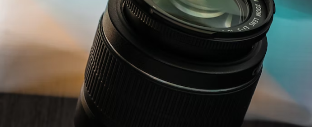
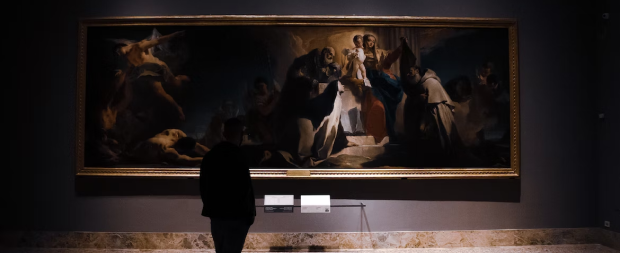

Black and white photography may seem old-fashioned, but it's a timeless art form that has the power to create stunning, emotional images. If you're a photo contest entrant looking to stand out from the crowd, here are a few reasons why you should give black and white photography a try
-

- It emphasizes composition: Without the distraction of color, black and white photography puts more emphasis on the composition of the image. You'll need to pay closer attention to the lines, shapes, and textures in the scene to create a visually striking image.
- It creates a mood: Black and white photography can create a moody, atmospheric feel that color photos often can't match. Shadows and highlights can be used to create dramatic effects and convey emotion. 
- It adds a timeless quality: Black and white photography has a timeless quality that can make your photos feel like they were taken decades ago. This can be a great way to add a sense of nostalgia or history to your images.
- It's great for low-light situations: Black and white photography is often a better choice than color in low-light situations. This is because it can create a better contrast between the dark and light areas of the image, making it easier to see the details.
- It's a creative challenge: Shooting in black and white can be a creative challenge that can push you out of your comfort zone. It requires you to think differently about your subject and the scene, and can help you develop your photographic skills in new ways.